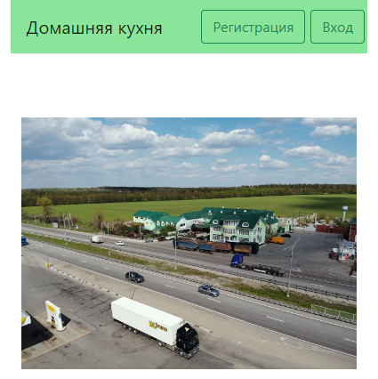

HomeCooking
Сайт для придорожного кафе
Привет! Меня зовут Никита, мне 15 лет. Живу я в селе Курино, а учусь в МБОУ "СОШ села Конь-Колодезь".
В свободное от учебы время я люблю играть в видеоигры, смотреть фильмы, слушать музыку. Так же в ряд моих увлечений входит программирование с которым я познакомился в Лицее Академии Яндекса ещё в седьмом классе по предложению моего школьного учителя информатики.
На данный момент все мои самые удачные проекты были написаны в Яндекс Лицее. Их список вы можете посмотреть ниже.
Сайт для придорожного кафе
Игра по типу Flappy Bird
Приложение для поддержки здорового образа жизни